Dr. Praveen Gupta is a regular health panelist on top national TV channels and writes health columns in major English and Hindi newspapers.
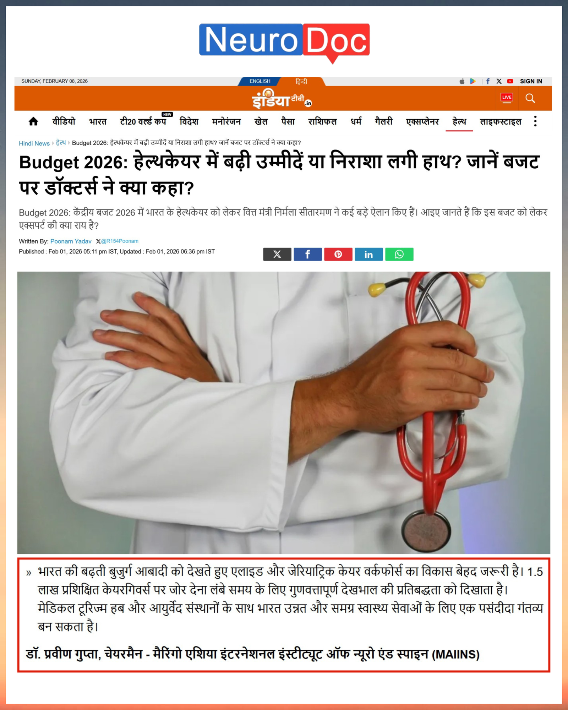
Dr. Praveen Gupta weighs in on the healthcare allocations and expectations from the newly declared budget.
Detailed overview of clinical Allied Professionals rules and their impact on Indian medical tourism.
Feature naming Dr. Praveen Gupta among key business and medical minds shaping healthcare systems.
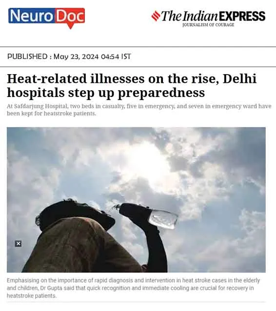
Urgent guidelines from leading medical staff about avoiding extreme heatwave exposures in North India.
Details on emergency department updates and clinical setups across NCR for treating heat stress.
How severe thermal stress impacts neurotransmitter balance, cerebral flow, and early warning flags.
Explains how severe dehydration spikes blood viscosity, increasing acute stroke risks among seniors.
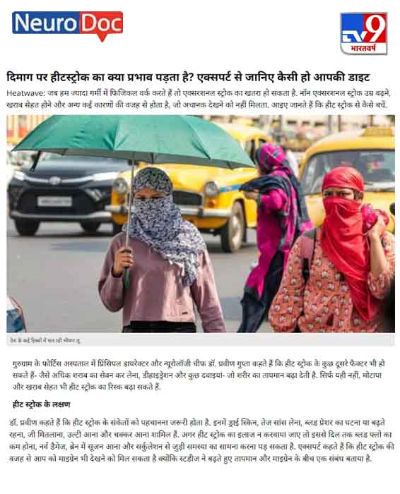
Part two of our summer neuro-care review detailing fluid charts, nutrition plans, and cooling steps.
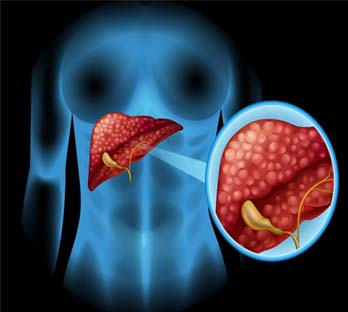
Discussing the alarming spike in non-alcoholic metabolic conditions linked directly to long desk hours.
Understanding how hepatic inflammation and fatty tissues alter cerebral circulation and cognitive performance.
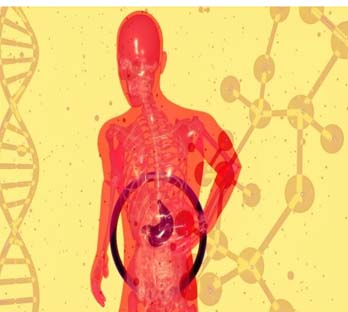
How chronic sitting and lack of daily exercise impact general wellness and raise corporate health risks.
Guidelines on rehabilitation pathways and safety precautions when returning to active work post-surgery.
Reviewing dietary risk indices, food additives, and non-alcoholic factors triggering hepatic failures.
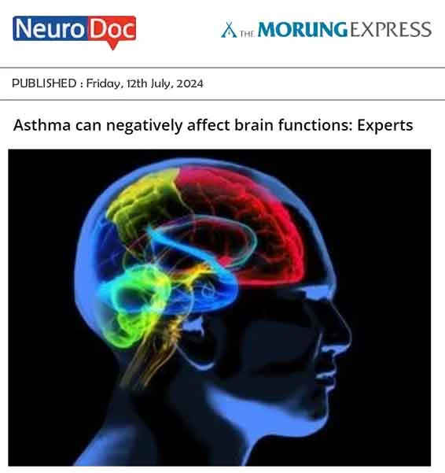
Clinical reports indicating how chronic breathing constraints alter oxygenation levels in active brain areas.
Expert analysis on designing active intervals during office shifts to combat chronic organ strain.
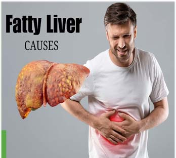
How chronic insomnia combined with processed fats causes fat accumulation in vital organs.
Reviewing systemic metabolic shifts triggered by continuous sitting and lack of core movement.
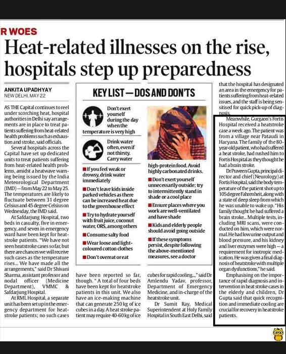
Review of new diagnostic protocols for diagnosing rare structural anomalies.
How multidisciplinary emergency units act fast during golden-hour windows to reverse stroke symptoms.
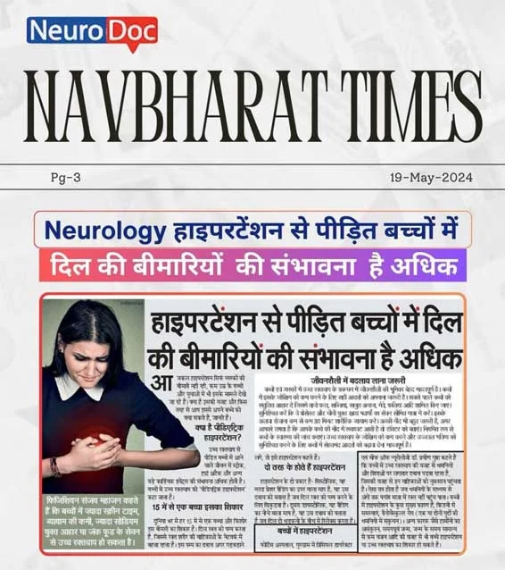
A look into clinical rehabilitation methods that target motor and cognitive recovery.
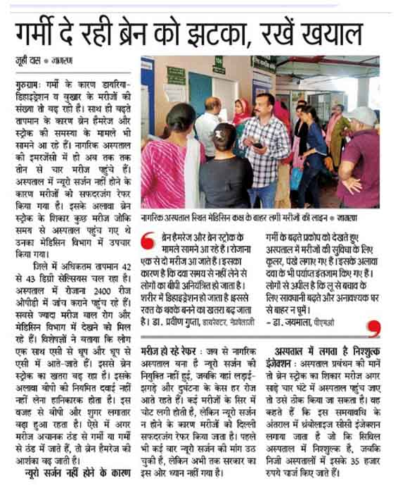
How early clinical therapy helps manage Parkinson's progression and tremor severity.
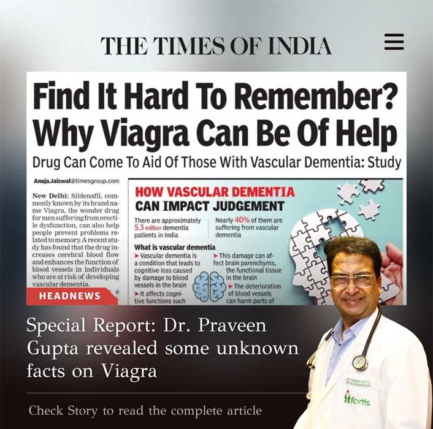
Essential clinical guides to maintaining core health and posture during long desktop jobs.
A breakdown of clinical paths for drug-resistant seizures using advanced diagnostic options.
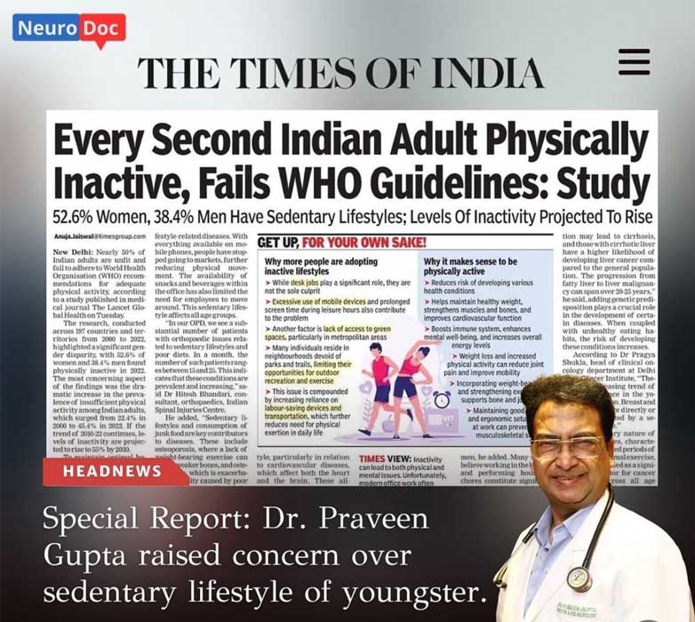
How our team identifies and treats chronic headache pain and neuropathic discomfort.
Consult with Dr. Praveen Gupta to get an accurate diagnosis and custom treatment plan for your neurological health. We are here to support your journey back to wellness.